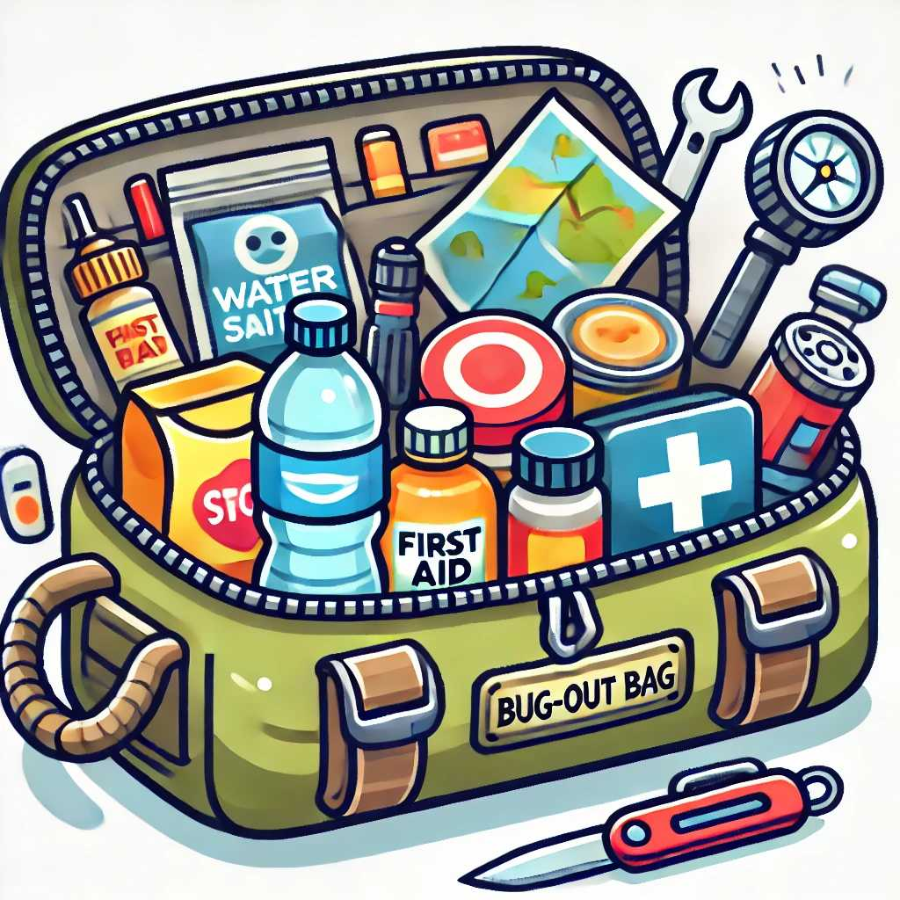

The Ultimate Guide to Building a Bug-Out Bag
A bug-out bag (BOB) is a portable kit that contains all the essential items you need to survive for at least 72 hours during an emergency. Whether you’re facing a natural disaster, civil unrest, or any other crisis, a well-prepared bug-out bag can be a lifesaver. This guide will help you build the ultimate bug-out bag.
1. Choosing the Right Bag
The first step in building a bug-out bag is selecting the right backpack. It should be durable, comfortable, and large enough to hold all your essential items.
Key Features:
- Durability: Look for water-resistant materials and strong zippers.
- Comfort: Padded shoulder straps and back support.
- Capacity: A 40-60 liter bag is typically sufficient.
2. Water and Hydration
Water is essential for survival. Your bug-out bag should include means to carry, filter, and purify water.
Essential Items:
- Water Bottles or Hydration Bladder: At least 2 liters.
- Water Filter or Purification Tablets: To ensure safe drinking water.
- Collapsible Water Container: For additional water storage.
3. Food and Nutrition
Pack enough non-perishable food to last at least 72 hours. Choose items that are lightweight, nutritious, and have a long shelf life.
Recommended Food Items:
- Energy Bars and Trail Mix: High-calorie snacks.
- Dehydrated Meals: Lightweight and easy to prepare.
- Canned Goods: Ready-to-eat meals.
- Multivitamins: To supplement your diet.
4. Shelter and Warmth
Protect yourself from the elements with appropriate shelter and clothing.
Essential Items:
- Tent or Tarp: Lightweight and compact for easy carrying.
- Sleeping Bag or Emergency Blanket: To keep warm at night.
- Extra Clothing: Include layers for different weather conditions.
- Rain Gear: Waterproof jacket and pants.
5. Fire and Light
Fire is crucial for warmth, cooking, and signaling for help. Light sources help you navigate and perform tasks in the dark.
Essential Items:
- Fire Starters: Matches, lighters, and fire steel.
- Tinder: Waterproof options like cotton balls soaked in petroleum jelly.
- Flashlight and Headlamp: With extra batteries.
- Glow Sticks: For emergency lighting.
6. First Aid and Hygiene
A comprehensive first aid kit is essential for treating injuries and preventing infections.
Essential Items:
- First Aid Kit: Include bandages, antiseptics, pain relievers, and tweezers.
- Personal Hygiene Items: Toothbrush, toothpaste, soap, and hand sanitizer.
- Medications: Any prescription medications and over-the-counter drugs.
7. Tools and Equipment
Multi-purpose tools and equipment can help you perform a variety of tasks, from building shelter to repairing gear.
Essential Items:
- Multi-Tool: Includes pliers, knife, screwdriver, and more.
- Knife: A sturdy fixed-blade knife.
- Duct Tape: For repairs and improvising.
- Paracord: Versatile and strong cordage.
8. Navigation and Communication
Stay oriented and communicate with others using reliable navigation and communication tools.
Essential Items:
- Compass and Map: Know how to use them.
- GPS Device: For precise navigation.
- Whistle: To signal for help.
- Two-Way Radio: For communication with others.
9. Important Documents and Money
Keep copies of important documents and some cash in your bug-out bag.
Essential Items:
- Identification: Copies of ID, passport, and other important documents.
- Cash: In small denominations.
- Emergency Contact Information: Written down in case your phone is unavailable.
10. Personal Items
Include any personal items that you or your family members may need.
Essential Items:
- Glasses or Contacts: And related supplies.
- Comfort Items: Such as a book, playing cards, or a small toy.
- Special Needs Items: For babies, elderly, or pets.
Conclusion
Building a bug-out bag requires careful planning and consideration of your specific needs. Regularly check and update your bag to ensure all items are in good condition and up to date. With the right preparation, your bug-out bag will be ready to support you through any emergency situation.